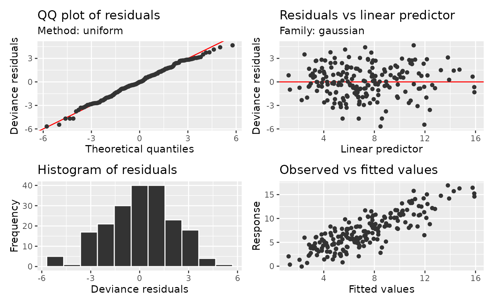
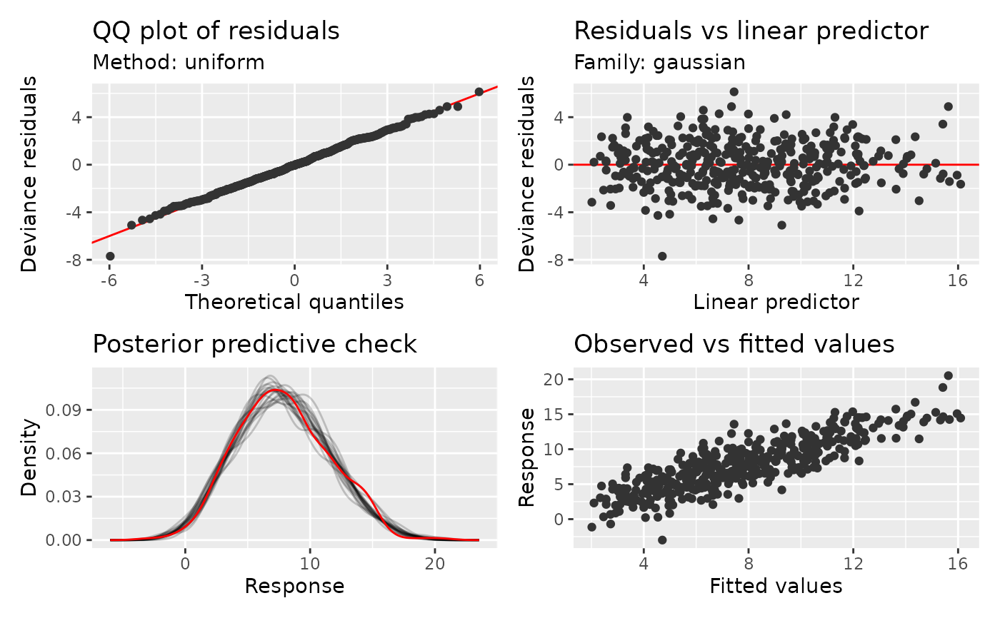
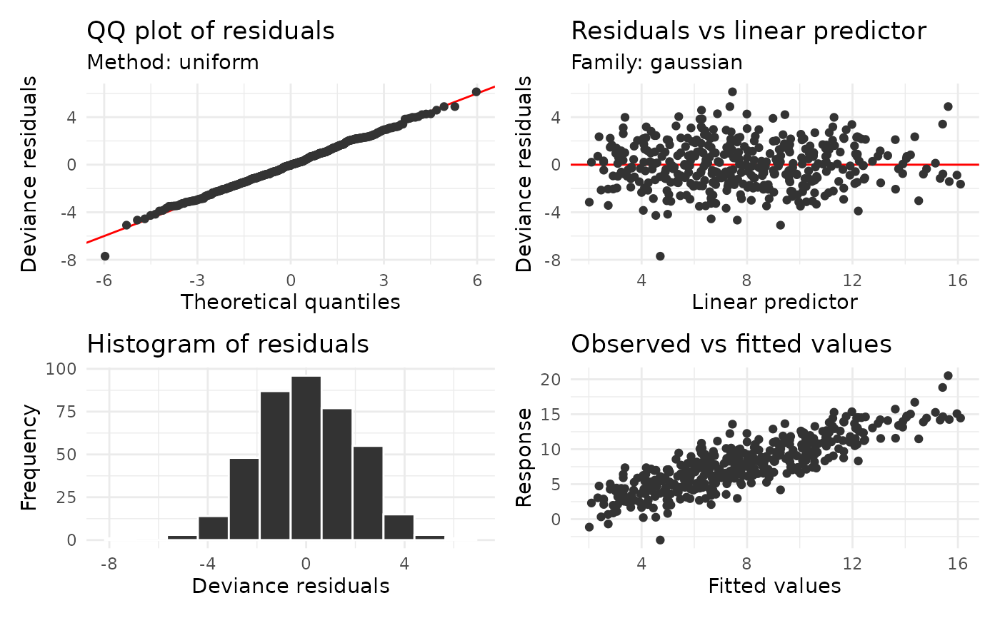
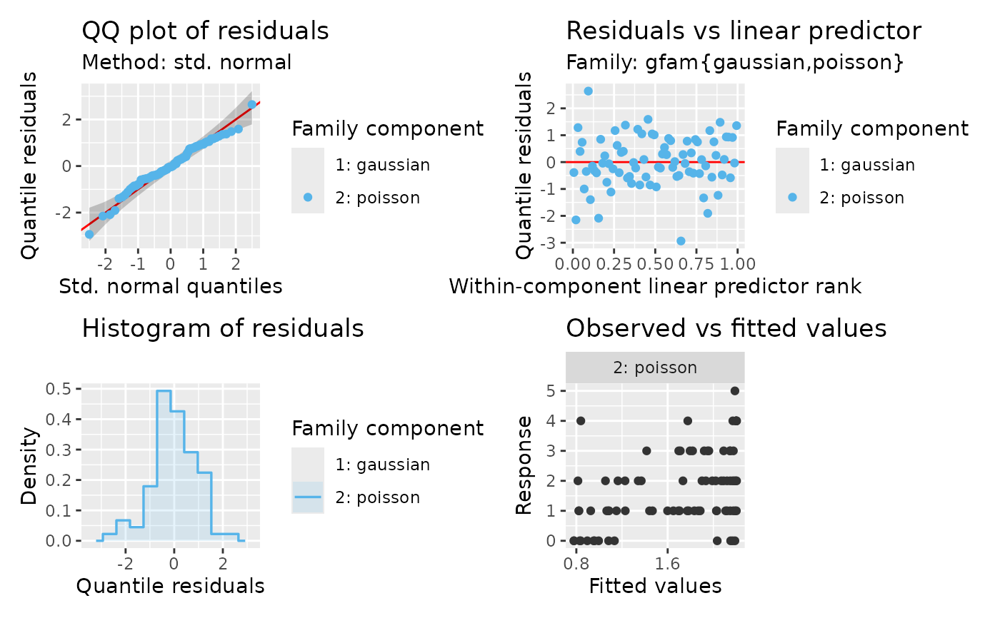
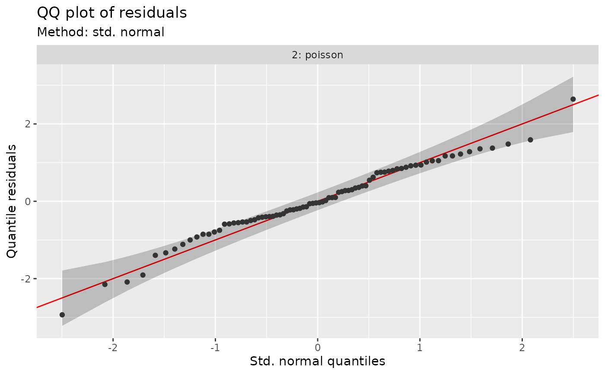

Model diagnostic plots
Source:R/appraise.R, R/gamm4-methods.R, R/gjrm-diagnostics.R, and 2 more
appraise.RdModel diagnostic plots
Usage
appraise(model, ...)
# S3 method for class 'gam'
appraise(
model,
method = NULL,
use_worm = FALSE,
n_uniform = 10,
n_simulate = 50,
seed = NULL,
type = NULL,
n_bins = c("sturges", "scott", "fd"),
ncol = NULL,
nrow = NULL,
guides = "keep",
level = 0.9,
ci_col = "black",
ci_alpha = 0.2,
point_col = "grey20",
point_alpha = 1,
line_col = "red",
by_family = NULL,
rank = NULL,
scalable = NULL,
scalable_threshold = 10000L,
qq_bins = 1000L,
density_bins = c(50L, 50L),
ppcheck = FALSE,
n_ppc = 50,
density_method = c("kde", "histogram"),
bandwidth = NULL,
conditioning = NULL,
ppc_batch_size = 10L,
...,
n_dharma = 250L
)
# S3 method for class 'lm'
appraise(model, ...)
# S3 method for class 'gamlss'
appraise(model, ..., type = "quantile", seed = NULL, conditioning = NULL)
# Default S3 method
appraise(
model,
...,
type = NULL,
seed = NULL,
conditioning = NULL,
n_dharma = 250L
)
# S3 method for class 'gamm4'
appraise(model, conditioning = NULL, ...)
# S3 method for class 'gjrm'
appraise(
model,
...,
type = "quantile",
seed = NULL,
conditioning = NULL,
response = NULL,
ppcheck = FALSE,
by_family = NULL,
n_dharma = 250L
)
# S3 method for class 'gamm'
appraise(model, conditioning = NULL, ...)
# S3 method for class 'gratia_diagnostic_proxy'
appraise(model, type = "quantile", ...)
# S3 method for class 'lme'
appraise(model, conditioning = NULL, ...)
# S3 method for class 'merMod'
appraise(model, conditioning = NULL, ...)
# S3 method for class 'sdmTMB'
appraise(
model,
conditioning = NULL,
component = "response",
field_method = c("mle-mvn", "mle-eb", "mle-mvn-integrated"),
...
)Arguments
- model
a fitted model supported by diagnostic_support, including lm, glm, gam/bam, gamm/gamm4, glmmTMB, univariate GJRM and sdmTMB.
- ...
arguments passed to
patchwork::wrap_plots().- method
character or
NULL; how to calculate reference quantiles. Probability integral transform (PIT) and quantile residuals use fixed uniform and standard-normal references, respectively. For quantile residuals,"normal"also selects that fixed reference; other named methods require traditional residuals. For deviance, response and Pearson residuals:"uniform"applies the fitted inverse cumulative distribution function (CDF) to randomised uniform quantiles and averages the resulting ordered residuals overn_uniformdraws."simulate"generatesn_simulateresponse data sets at the fitting covariates. Responses are generated together when needed to preserve dependence, and their ordered residuals supply reference values and bands."marginal"approximates the pooled distribution of individual residuals, without bands for dependence. This is selected for BAM GEE and PQL correlations that do not define a joint response distribution. Explicit joint simulation is unavailable in those cases."normal"uses a normal approximation fitted to the residual location and scale. For dependent responses it omits bands based on independence."direct"is deprecated in favour of"uniform".
For ordinary GAMs,
NULLselects"simulate"for Tweedie and"uniform"otherwise. Missing inverse CDFs cause a switch to simulation; missing response generators can cause a switch to a normal approximation for independent responses. Dependent responses use joint simulation when available, or marginal checks otherwise. For grouped families,NULLselects simulation if every component has a generator, or inverse-CDF sampling with a message if every component has an inverse CDF. If neither is available, it gives an error; a normal approximation must be requested explicitly.- use_worm
logical; should a worm plot be drawn in place of the QQ plot?
- n_uniform
numeric; number of inverse-CDF draws to average when
method = "uniform".- n_simulate
numeric; number of data sets to simulate from the estimated model when using the simulation method (
method = "simulate") for QQ plots.- seed
numeric; the random number seed to use for
method = "simulate"andmethod = "uniform", and for randomised quantile residuals and posterior predictive draws.- type
character or
NULL; residual type:"deviance","response","pearson","pit","quantile","dharma", or"surrogate"(forocat()ormultinom()GAMs).NULLuses the model-specific default: deviance for ordinary lm/glm/GAM fits, and quantile for supported grouped families, GJRM, sdmTMB and full mixed-model checks. glmmTMB uses Pearson residuals conditionally and response residuals marginally. Extracted GAM components follow the ordinary GAM defaults. See diagnostic_support.- n_bins
character or numeric; either the number of bins or a string indicating how to calculate the number of bins.
- ncol, nrow
numeric; the numbers of rows and columns over which to spread the plots.
- guides
character; one of
"keep"(the default),"collect", or"auto". Passed topatchwork::plot_layout()- level
numeric; the coverage level for QQ plot reference intervals. Must be strictly
0 < level < 1. Used for quantile reference bands and traditionalmethod = "simulate"or"normal"bands. Also controls posterior predictive intervals for discrete responses withppcheck = TRUE.- ci_alpha, ci_col
Deprecated; use
gratia_theme_get()theme settings instead. Colour and transparency of QQ reference intervals, including bands for quantile residuals.- point_col, point_alpha
Deprecated; use
gratia_theme_get()theme settings instead. Colour and transparency used to draw points in the plots. Seegraphics::par()section Color Specification. This is passed to the individual plotting functions, and therefore affects the points of all plots. Pooled grouped residual panels map component identity to colour instead of using the constantpoint_col.- line_col
Deprecated; use
gratia_theme_get()theme settings instead. Colour specification for the 1:1 line in the QQ plot and the reference line in the residuals vs linear predictor plot. Also used for the observed distribution whenppcheck = TRUE.- by_family
logical or
NULL; separate indexed grouped-family components into facets. The default pools quantile residuals with component colours and facets traditional residuals.TRUEandFALSEexplicitly select the layout. Inappraise(), observed-versus-fitted values always use component facets. Standaloneobserved_fitted_plot()facets by default and permits explicit pooling. Ignored for ordinary models.- rank
logical or
NULL; use within-component ranks on the horizontal axis of residual-versus-predictor plots. The default ranks pooled grouped plots and retains original predictors in facets.TRUEorFALSEoverrides this independently of the residual type and layout. Only finite observations included in each component determine its ranks; average ties are used.- scalable
Logical or
NULL;NULLautomatically uses scalable plots at or abovescalable_thresholdretained fitting observations.TRUEorFALSEforces scalable or original rendering.- scalable_threshold
Positive integer; automatic switching threshold.
- qq_bins
Maximum number of QQ/worm points per family component, including endpoints.
- density_bins
Positive integer or pair giving heatmap grid dimensions.
- ppcheck
logical; replace the residual histogram with a
posterior_predictive_plot()? Defaults toFALSE. Requires a model and family supported by that function. Replicated distributions useci_col. Discrete posterior points and interval bars default to opacity0.8, while continuous density curves use0.2. Explicitly supplyingci_alphaoverrides these defaults as well as the QQ reference interval opacity.- n_ppc
positive integer; number of posterior predictive data sets when
ppcheck = TRUE. Independent of the QQ plot'sn_simulate.- density_method
Conditional-density estimator:
"kde"(the default) usesKernSmooth::bkde2D()with Gaussian kernels;"histogram"uses unsmoothed rectangular bins. Only affects the residual heatmap.- bandwidth
Optional pair of positive bandwidths for the predictor and residual axes, in their plotted units.
NULLuses normal-reference bandwidths, adjusted for two dimensions, with a fallback for constant axes. Used only fordensity_method = "kde"and conditional density.- conditioning
character or
NULL;"conditional"holds fitted random effects fixed,"marginal"averages over new effects, and"gam_component"uses the extracted GAM. Availability and defaults depend on the model; see diagnostic_support.- ppc_batch_size
positive integer; number of posterior predictive draws to process together for scalable plots. Changing the batch size does not change results for a fixed seed.
- n_dharma
positive integer; number of response simulations for
type = "dharma". This is separate fromn_simulate, which controls traditional QQ reference calculations. Defaults to 250.- response
NULLuses all responses; a single integer selects one. Formgcv::gfam()models, the integer indexes the family list and selects observations assigned to that component, including when families repeat. For joint GJRM models, it selects a response in model order. Selection is independent ofby_family.- component
character; for delta sdmTMB models, select the complete
"response", occurrence ("binomial"), or"positive"component. Positive-component checks use only observations with positive responses.- field_method
how to treat fitted sdmTMB fields: hold one posterior draw fixed (
"mle-mvn"), hold estimates fixed ("mle-eb"), or average over fitted-field uncertainty ("mle-mvn-integrated"). Seequantile_residuals()and diagnostic_support.
Details
Use type = "dharma" for simulation-based PIT residuals calculated
internally using gratia's response generators; no DHARMa or mgcViz
dependency is needed. These residuals lie in [0, 1], including exact
endpoints, and do not require a response CDF. n_dharma controls their
simulation count. All residual panels share one calculated vector.
QQ and worm plots require method = NULL and use uniform reference
quantiles, with approximate pointwise bands for independent responses.
Bands are omitted for dependent responses. Censored and multivariate
outcomes are unsupported. See dharma_residuals() for the calculation.
Use type = "surrogate" for mgcv::ocat() and mgcv::multinom() GAMs.
The former uses a scalar latent logistic residual; the latter retains
all category utilities, including category 0, as separate panels with
centred Gumbel references. QQ and worm plots require method = NULL.
Each appraisal shares one residual draw across panels, with the same
draw in ordinary and scalable displays. Multinomial residuals are plotted
against their own category probabilities; observed-versus-fitted panels
compare category indicators with those probabilities. Pointwise bands
are calculated separately for each utility. See surrogate_residuals().
With type = NULL, ordinary lm/glm/GAM fits use deviance residuals.
Models fitted with mgcv::gfam() use randomised quantile (Dunn–Smyth)
residuals when every active component supplies a supported CDF and
probability limits for discrete or censored observations. Otherwise, a
message identifies unsupported components and all
components use deviance residuals; requesting type = "quantile" explicitly
is an error when any component is unsupported. Components never mix
residual scales. Invalid encodings or numerical CDF failures are errors.
Quantile residuals use each component's fitted parameters, dispersion and
weights, including binomial trial counts and Gaussian precision weights.
Gamma (including precision weights), negative binomial, beta, scaled-t,
Tweedie, inverse Gaussian, ordinal and zero-inflated Poisson components are
supported. Unrecognised custom-family bounds remain unsupported.
A custom CDF must also support the probabilities just below discrete
values and at censoring limits. Replacements for recognised family CDFs
must use the same arguments and probability conventions. Scalar uncensored
cnorm(), clog() and
cpois() components are supported; genuine censoring requires recoverable,
aligned censoring bounds. Matrix censored responses rejected by gfam()
and upstream fitting failures are not repaired.
Use response = NULL to check every grouped-family component or a single
integer to select a component by its position in the mgcv::gfam() family
list. Repeated families remain distinct. Selection filters fitting
observations without refitting the model and retains original component
labels. by_family independently controls the layout of the selected data.
With an explicit seed, selected residuals match the corresponding rows of
an all-component calculation whenever all components support that calculation.
by_family = NULL pools quantile residuals with colours identifying indexed
family components, including repeated uses of the same family. Traditional
residuals use component facets with free axes by default. The pooled
residual-versus-predictor plot uses within-component predictor ranks:
(rank(eta, ties.method = "average") - 0.5) / n, where n counts the finite
observations included for that component; constants map to 0.5.
Facets retain original linear predictors. Use rank to override this choice
independently of residual type or layout. The links and original predictor
values can have different meanings across components; ranks compare
positions within components, not effects on a common response scale.
Pooled histograms use common bin edges and component-specific densities.
Quantile QQ and worm plots compare to fixed standard-normal quantiles,
with an identity line or zero line. Independent responses have exact
pointwise reference bands for ordered residuals. For dependent responses,
bands use simulations that preserve dependence when a joint generator is
available; otherwise they are omitted with an explanation. Bands condition
on fitted parameters, exclude estimation uncertainty and do not provide
simultaneous coverage. References calculated from simulation ranks also
use simulated bands; see diagnostic_support. Worm plots
subtract the same theoretical quantiles from residuals and reference bands.
appraise() computes one seeded residual vector shared by its residual
panels and always separates observed-versus-fitted values by component,
because response units differ. Standalone observed_fitted_plot() allows
explicit pooling. Ordinal panels use expected category codes.
Scalable plots aggregate all observations before rendering. Residual heatmaps show conditional density; observed-versus-fitted heatmaps show counts. Point styling applies to QQ/worm points, and heatmap fill scales can be changed with ggplot scales. QQ references average draws as they are generated or compute exact pooled quantiles using temporary files above the configured memory threshold; see diagnostic_support. Supported univariate GJRM::gamlss models use quantile residuals by default.
If the response expectation does not exist, the observed-versus-fitted panel explains why it is unavailable. Other supported panels remain usable. Prepared diagnostic objects can be given a new conditioning or field choice; the model is prepared again so all panels use the requested choice.
Note
The wording used in mgcv::qq.gam() uses direct in reference to the
simulated residuals method (method = "simulated"). To avoid confusion,
method = "direct" is deprecated in favour of method = "uniform".
See also
The plots are produced by functions qq_plot(),
residuals_linpred_plot(), residuals_hist_plot(),
observed_fitted_plot(), and optionally
posterior_predictive_plot().
Examples
load_mgcv()
## simulate some data...
dat <- data_sim("eg1", n = 400, dist = "normal", scale = 2, seed = 2)
mod <- gam(y ~ s(x0) + s(x1) + s(x2) + s(x3), data = dat)
## run some basic model checks
appraise(mod) & ggplot2::theme(
geom.gratia.diagnostic.point = ggplot2::element_geom(colour = "steelblue"),
gratia.alpha.diagnostic.point = 0.4)

## replace the residual histogram with a posterior predictive check
appraise(mod, ppcheck = TRUE, n_ppc = 20, seed = 42)

## To change the theme for all panels use the & operator, for example to
## change the ggplot theme for all panels
library("ggplot2")
appraise(mod, seed = 42) & theme_minimal()

## Select a grouped-family component by its position in the family list
set.seed(53)
grouped <- data.frame(x = runif(160), family_id = rep(1:2, 80))
grouped$component <- factor(grouped$family_id)
grouped$y <- rnorm(160, sin(2 * pi * grouped$x), 0.4)
is_count <- grouped$family_id == 2L
grouped$y[is_count] <- rpois(sum(is_count), exp(grouped$x[is_count]))
grouped_fit <- gam(cbind(y, family_id) ~ component +
s(x, by = component, k = 6), data = grouped,
family = gfam(list(gaussian(), poisson())), method = "REML")
appraise(grouped_fit, response = 2, seed = 54)

## Layout remains a separate choice
qq_plot(grouped_fit, response = 2, by_family = TRUE, seed = 54)
